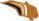

The Wonderful Wizard of Oz
 |
by, L. Frank Baum |
Complete sample book.
[EPUB] download for an ereader.
[MOBI] download for the Kindle ereader.
An example for you to download, examine, and read, using various ereaders.
____________
Published by Tiger Farm Press, February, 2013.
Public Domain Book.
The Wonderful Wizard of Oz was first published in 1900.
TIGER FARM PRESS  CALIFORNIA
Table of Contents
_____________________________
Introduction
The Cyclone
The Council with the Munchkins
How Dorothy Saved the Scarecrow
The Road Through the Forest
The Rescue of the Tin Woodman
The Cowardly Lion
The Journey to the Great Oz
The Deadly Poppy Field
The Queen of the Field Mice
The Guardian of the Gate
The Wonderful City of Oz
The Search for the Wicked Witch
The Rescue
The Winged Monkeys
The Discovery of Oz, the Terrible
The Magic Art of the Great Humbug
How the Balloon Was Launched
Away to the South
Attacked by the Fighting Trees
The Dainty China Country
The Lion Becomes the King of Beasts
The Country of the Quadlings
Glinda The Good Witch Grants Dorothy’s Wish
Home Again
About the Publisher
Story Lines
“There is no place like home,” said Dorthy
“Brains are the only things worth having in this world, no matter whether one is a crow or a man,” said an old crow to the Scarecrow.
The Cyclone
Dorothy lived in the midst of the great Kansas prairies, with Uncle Henry, who was a farmer, and Aunt Em, who was the farmer’s wife. Their house was small, for the lumber to build it had to be carried by wagon many miles. There were four walls, a floor and a roof, which made one room; and this room contained a rusty looking cookstove, a cupboard for the dishes, a table, three or four chairs, and the beds. Uncle Henry and Aunt Em had a big bed in one corner, and Dorothy a little bed in another corner. There was no garret at all, and no cellar—except a small hole dug in the ground, called a cyclone cellar, where the family could go in case one of those great whirlwinds arose, mighty enough to crush any building in its path. It was reached by a trap door in the middle of the floor, from which a ladder led down into the small, dark hole.
When Dorothy stood in the doorway and looked around, she could see nothing but the great gray prairie on every side. Not a tree nor a house broke the broad sweep of flat country that reached to the edge of the sky in all directions. The sun had baked the plowed land into a gray mass, with little cracks running through it. Even the grass was not green, for the sun had burned the tops of the long blades until they were the same gray color to be seen everywhere. Once the house had been painted, but the sun blistered the paint and the rains washed it away, and now the house was as dull and gray as everything else.
When Aunt Em came there to live she was a young, pretty wife. The sun and wind had changed her, too. They had taken the sparkle from her eyes and left them a sober gray; they had taken the red from her cheeks and lips, and they were gray also. She was thin and gaunt, and never smiled now. When Dorothy, who was an orphan, first came to her, Aunt Em had been so startled by the child’s laughter that she would scream and press her hand upon her heart whenever Dorothy’s merry voice reached her ears; and she still looked at the little girl with wonder that she could find anything to laugh at.
Uncle Henry never laughed. He worked hard from morning till night and did not know what joy was. He was gray also, from his long beard to his rough boots, and he looked stern and solemn, and rarely spoke.
It was Toto that made Dorothy laugh, and saved her from growing as gray as her other surroundings. Toto was not gray; he was a little black dog, with long silky hair and small black eyes that twinkled merrily on either side of his funny, wee nose. Toto played all day long, and Dorothy played with him, and loved him dearly.
Today, however, they were not playing. Uncle Henry sat upon the doorstep and looked anxiously at the sky, which was even grayer than usual. Dorothy stood in the door with Toto in her arms, and looked at the sky too. Aunt Em was washing the dishes.
From the far north they heard a low wail of the wind, and Uncle Henry and Dorothy could see where the long grass bowed in waves before the coming storm. There now came a sharp whistling in the air from the south, and as they turned their eyes that way they saw ripples in the grass coming from that direction also.
Suddenly Uncle Henry stood up.
“There’s a cyclone coming, Em,” he called to his wife. “I’ll go look after the stock.” Then he ran toward the sheds where the cows and horses were kept.
Aunt Em dropped her work and came to the door. One glance told her of the danger close at hand.
“Quick, Dorothy!” she screamed. “Run for the cellar!”
Toto jumped out of Dorothy’s arms and hid under the bed, and the girl started to get him. Aunt Em, badly frightened, threw open the trap door in the floor and climbed down the ladder into the small, dark hole. Dorothy caught Toto at last and started to follow her aunt. When she was halfway across the room there came a great shriek from the wind, and the house shook so hard that she lost her footing and sat down suddenly upon the floor.
Then a strange thing happened.
The house whirled around two or three times and rose slowly through the air. Dorothy felt as if she were going up in a balloon.
The north and south winds met where the house stood, and made it the exact center of the cyclone. In the middle of a cyclone the air is generally still, but the great pressure of the wind on every side of the house raised it up higher and higher, until it was at the very top of the cyclone; and there it remained and was carried miles and miles away as easily as you could carry a feather.
It was very dark, and the wind howled horribly around her, but Dorothy found she was riding quite easily. After the first few whirls around, and one other time when the house tipped badly, she felt as if she were being rocked gently, like a baby in a cradle.
Toto did not like it. He ran about the room, now here, now there, barking loudly; but Dorothy sat quite still on the floor and waited to see what would happen.
Once Toto got too near the open trap door, and fell in; and at first the little girl thought she had lost him. But soon she saw one of his ears sticking up through the hole, for the strong pressure of the air was keeping him up so that he could not fall. She crept to the hole, caught Toto by the ear, and dragged him into the room again, afterward closing the trap door so that no more accidents could happen.
Hour after hour passed away, and slowly Dorothy got over her fright; but she felt quite lonely, and the wind shrieked so loudly all about her that she nearly became deaf. At first she had wondered if she would be dashed to pieces when the house fell again; but as the hours passed and nothing terrible happened, she stopped worrying and resolved to wait calmly and see what the future would bring. At last she crawled over the swaying floor to her bed, and lay down upon it; and Toto followed and lay down beside her.
In spite of the swaying of the house and the wailing of the wind, Dorothy soon closed her eyes and fell fast asleep.
The Council with the Munchkins
She was awakened by a shock, so sudden and severe that if Dorothy had not been lying on the soft bed she might have been hurt. As it was, the jar made her catch her breath and wonder what had happened; and Toto put his cold little nose into her face and whined dismally. Dorothy sat up and noticed that the house was not moving; nor was it dark, for the bright sunshine came in at the window, flooding the little room. She sprang from her bed and with Toto at her heels ran and opened the door.
The little girl gave a cry of amazement and looked about her, her eyes growing bigger and bigger at the wonderful sights she saw.
The cyclone had set the house down very gently—for a cyclone—in the midst of a country of marvelous beauty. There were lovely patches of greensward all about, with stately trees bearing rich and luscious fruits. Banks of gorgeous flowers were on every hand, and birds with rare and brilliant plumage sang and fluttered in the trees and bushes. A little way off was a small brook, rushing and sparkling along between green banks, and murmuring in a voice very grateful to a little girl who had lived so long on the dry, gray prairies.
While she stood looking eagerly at the strange and beautiful sights, she noticed coming toward her a group of the queerest people she had ever seen. They were not as big as the grown folk she had always been used to; but neither were they very small. In fact, they seemed about as tall as Dorothy, who was a well-grown child for her age, although they were, so far as looks go, many years older.
Three were men and one a woman, and all were oddly dressed. They wore round hats that rose to a small point a foot above their heads, with little bells around the brims that tinkled sweetly as they moved. The hats of the men were blue; the little woman’s hat was white, and she wore a white gown that hung in pleats from her shoulders. Over it were sprinkled little stars that glistened in the sun like diamonds. The men were dressed in blue, of the same shade as their hats, and wore well-polished boots with a deep roll of blue at the tops. The men, Dorothy thought, were about as old as Uncle Henry, for two of them had beards. But the little woman was doubtless much older. Her face was covered with wrinkles, her hair was nearly white, and she walked rather stiffly.
When these people drew near the house where Dorothy was standing in the doorway, they paused and whispered among themselves, as if afraid to come farther. But the little old woman walked up to Dorothy, made a low bow and said, in a sweet voice:
“You are welcome, most noble Sorceress, to the land of the Munchkins. We are so grateful to you for having killed the Wicked Witch of the East, and for setting our people free from bondage.”
Dorothy listened to this speech with wonder. What could the little woman possibly mean by calling her a sorceress, and saying she had killed the Wicked Witch of the East? Dorothy was an innocent, harmless little girl, who had been carried by a cyclone many miles from home; and she had never killed anything in all her life.
But the little woman evidently expected her to answer; so Dorothy said, with hesitation, “You are very kind, but there must be some mistake. I have not killed anything.”
“Your house did, anyway,” replied the little old woman, with a laugh, “and that is the same thing. See!” she continued, pointing to the corner of the house. “There are her two feet, still sticking out from under a block of wood.”
Dorothy looked, and gave a little cry of fright. There, indeed, just under the corner of the great beam the house rested on, two feet were sticking out, shod in silver shoes with pointed toes.
“Oh, dear! Oh, dear!” cried Dorothy, clasping her hands together in dismay. “The house must have fallen on her. Whatever shall we do?”
“There is nothing to be done,” said the little woman calmly.
“But who was she?” asked Dorothy.
“She was the Wicked Witch of the East, as I said,” answered the little woman. “She has held all the Munchkins in bondage for many years, making them slave for her night and day. Now they are all set free, and are grateful to you for the favor.”
“Who are the Munchkins?” inquired Dorothy.
“They are the people who live in this land of the East where the Wicked Witch ruled.”
“Are you a Munchkin?” asked Dorothy.
“No, but I am their friend, although I live in the land of the North. When they saw the Witch of the East was dead the Munchkins sent a swift messenger to me, and I came at once. I am the Witch of the North.”
“Oh, gracious!” cried Dorothy. “Are you a real witch?”
“Yes, indeed,” answered the little woman. “But I am a good witch, and the people love me. I am not as powerful as the Wicked Witch was who ruled here, or I should have set the people free myself.”
“But I thought all witches were wicked,” said the girl, who was half frightened at facing a real witch. “Oh, no, that is a great mistake. There were only four witches in all the Land of Oz, and two of them, those who live in the North and the South, are good witches. I know this is true, for I am one of them myself, and cannot be mistaken. Those who dwelt in the East and the West were, indeed, wicked witches; but now that you have killed one of them, there is but one Wicked Witch in all the Land of Oz—the one who lives in the West.”
“But,” said Dorothy, after a moment’s thought, “Aunt Em has told me that the witches were all dead—years and years ago.”
“Who is Aunt Em?” inquired the little old woman.
“She is my aunt who lives in Kansas, where I came from.”
The Witch of the North seemed to think for a time, with her head bowed and her eyes upon the ground. Then she looked up and said, “I do not know where Kansas is, for I have never heard that country mentioned before. But tell me, is it a civilized country?”
“Oh, yes,” replied Dorothy.
“Then that accounts for it. In the civilized countries I believe there are no witches left, nor wizards, nor sorceresses, nor magicians. But, you see, the Land of Oz has never been civilized, for we are cut off from all the rest of the world. Therefore we still have witches and wizards amongst us.”
“Who are the wizards?” asked Dorothy.
“Oz himself is the Great Wizard,” answered the Witch, sinking her voice to a whisper. “He is more powerful than all the rest of us together. He lives in the City of Emeralds.”
Dorothy was going to ask another question, but just then the Munchkins, who had been standing silently by, gave a loud shout and pointed to the corner of the house where the Wicked Witch had been lying.
“What is it?” asked the little old woman, and looked, and began to laugh. The feet of the dead Witch had disappeared entirely, and nothing was left but the silver shoes.
“She was so old,” explained the Witch of the North, “that she dried up quickly in the sun. That is the end of her. But the silver shoes are yours, and you shall have them to wear.” She reached down and picked up the shoes, and after shaking the dust out of them handed them to Dorothy.
“The Witch of the East was proud of those silver shoes,” said one of the Munchkins, “and there is some charm connected with them; but what it is we never knew.”
Dorothy carried the shoes into the house and placed them on the table. Then she came out again to the Munchkins and said:
“I am anxious to get back to my aunt and uncle, for I am sure they will worry about me. Can you help me find my way?”
The Munchkins and the Witch first looked at one another, and then at Dorothy, and then shook their heads.
“At the East, not far from here,” said one, “there is a great desert, and none could live to cross it.”
“It is the same at the South,” said another, “for I have been there and seen it. The South is the country of the Quadlings.”
“I am told,” said the third man, “that it is the same at the West. And that country, where the Winkies live, is ruled by the Wicked Witch of the West, who would make you her slave if you passed her way.”
“The North is my home,” said the old lady, “and at its edge is the same great desert that surrounds this Land of Oz. I’m afraid, my dear, you will have to live with us.”
Dorothy began to sob at this, for she felt lonely among all these strange people. Her tears seemed to grieve the kind-hearted Munchkins, for they immediately took out their handkerchiefs and began to weep also. As for the little old woman, she took off her cap and balanced the point on the end of her nose, while she counted “One, two, three” in a solemn voice. At once the cap changed to a slate, on which was written in big, white chalk marks:
“LET DOROTHY GO TO THE CITY OF EMERALDS”
The little old woman took the slate from her nose, and having read the words on it, asked, “Is your name Dorothy, my dear?”
“Yes,” answered the child, looking up and drying her tears.
“Then you must go to the City of Emeralds. Perhaps Oz will help you.”
“Where is this city?” asked Dorothy.
“It is exactly in the center of the country, and is ruled by Oz, the Great Wizard I told you of.”
“Is he a good man?” inquired the girl anxiously.
“He is a good Wizard. Whether he is a man or not I cannot tell, for I have never seen him.”
“How can I get there?” asked Dorothy.
“You must walk. It is a long journey, through a country that is sometimes pleasant and sometimes dark and terrible. However, I will use all the magic arts I know of to keep you from harm.”
“Won’t you go with me?” pleaded the girl, who had begun to look upon the little old woman as her only friend.
“No, I cannot do that,” she replied, “but I will give you my kiss, and no one will dare injure a person who has been kissed by the Witch of the North.”
She came close to Dorothy and kissed her gently on the forehead. Where her lips touched the girl they left a round, shining mark, as Dorothy found out soon after.
“The road to the City of Emeralds is paved with yellow brick,” said the Witch, “so you cannot miss it. When you get to Oz do not be afraid of him, but tell your story and ask him to help you. Good-bye, my dear.”
The three Munchkins bowed low to her and wished her a pleasant journey, after which they walked away through the trees. The Witch gave Dorothy a friendly little nod, whirled around on her left heel three times, and straightway disappeared, much to the surprise of little Toto, who barked after her loudly enough when she had gone, because he had been afraid even to growl while she stood by.
But Dorothy, knowing her to be a witch, had expected her to disappear in just that way, and was not surprised in the least.
How Dorothy Saved the Scarecrow
When Dorothy was left alone she began to feel hungry. So she went to the cupboard and cut herself some bread, which she spread with butter. She gave some to Toto, and taking a pail from the shelf she carried it down to the little brook and filled it with clear, sparkling water. Toto ran over to the trees and began to bark at the birds sitting there. Dorothy went to get him, and saw such delicious fruit hanging from the branches that she gathered some of it, finding it just what she wanted to help out her breakfast.
Then she went back to the house, and having helped herself and Toto to a good drink of the cool, clear water, she set about making ready for the journey to the City of Emeralds.
Dorothy had only one other dress, but that happened to be clean and was hanging on a peg beside her bed. It was gingham, with checks of white and blue; and although the blue was somewhat faded with many washings, it was still a pretty frock. The girl washed herself carefully, dressed herself in the clean gingham, and tied her pink sunbonnet on her head. She took a little basket and filled it with bread from the cupboard, laying a white cloth over the top. Then she looked down at her feet and noticed how old and worn her shoes were.
“They surely will never do for a long journey, Toto,” she said. And Toto looked up into her face with his little black eyes and wagged his tail to show he knew what she meant.
At that moment Dorothy saw lying on the table the silver shoes that had belonged to the Witch of the East.
“I wonder if they will fit me,” she said to Toto. “They would be just the thing to take a long walk in, for they could not wear out.”
She took off her old leather shoes and tried on the silver ones, which fitted her as well as if they had been made for her.
Finally she picked up her basket.
“Come along, Toto,” she said. “We will go to the Emerald City and ask the Great Oz how to get back to Kansas again.”
She closed the door, locked it, and put the key carefully in the pocket of her dress. And so, with Toto trotting along soberly behind her, she started on her journey.
There were several roads near by, but it did not take her long to find the one paved with yellow bricks. Within a short time she was walking briskly toward the Emerald City, her silver shoes tinkling merrily on the hard, yellow road-bed. The sun shone bright and the birds sang sweetly, and Dorothy did not feel nearly so bad as you might think a little girl would who had been suddenly whisked away from her own country and set down in the midst of a strange land.
She was surprised, as she walked along, to see how pretty the country was about her. There were neat fences at the sides of the road, painted a dainty blue color, and beyond them were fields of grain and vegetables in abundance. Evidently the Munchkins were good farmers and able to raise large crops. Once in a while she would pass a house, and the people came out to look at her and bow low as she went by; for everyone knew she had been the means of destroying the Wicked Witch and setting them free from bondage. The houses of the Munchkins were odd-looking dwellings, for each was round, with a big dome for a roof. All were painted blue, for in this country of the East blue was the favorite color.
Toward evening, when Dorothy was tired with her long walk and began to wonder where she should pass the night, she came to a house rather larger than the rest. On the green lawn before it many men and women were dancing. Five little fiddlers played as loudly as possible, and the people were laughing and singing, while a big table near by was loaded with delicious fruits and nuts, pies and cakes, and many other good things to eat.
The people greeted Dorothy kindly, and invited her to supper and to pass the night with them; for this was the home of one of the richest Munchkins in the land, and his friends were gathered with him to celebrate their freedom from the bondage of the Wicked Witch.
Dorothy ate a hearty supper and was waited upon by the rich Munchkin himself, whose name was Boq. Then she sat upon a settee and watched the people dance.
When Boq saw her silver shoes he said, “You must be a great sorceress.”
“Why?” asked the girl.
“Because you wear silver shoes and have killed the Wicked Witch. Besides, you have white in your frock, and only witches and sorceresses wear white.”
“My dress is blue and white checked,” said Dorothy, smoothing out the wrinkles in it.
“It is kind of you to wear that,” said Boq. “Blue is the color of the Munchkins, and white is the witch color. So we know you are a friendly witch.”
Dorothy did not know what to say to this, for all the people seemed to think her a witch, and she knew very well she was only an ordinary little girl who had come by the chance of a cyclone into a strange land.
When she had tired watching the dancing, Boq led her into the house, where he gave her a room with a pretty bed in it. The sheets were made of blue cloth, and Dorothy slept soundly in them till morning, with Toto curled up on the blue rug beside her.
She ate a hearty breakfast, and watched a wee Munchkin baby, who played with Toto and pulled his tail and crowed and laughed in a way that greatly amused Dorothy. Toto was a fine curiosity to all the people, for they had never seen a dog before.
“How far is it to the Emerald City?” the girl asked.
“I do not know,” answered Boq gravely, “for I have never been there. It is better for people to keep away from Oz, unless they have business with him. But it is a long way to the Emerald City, and it will take you many days. The country here is rich and pleasant, but you must pass through rough and dangerous places before you reach the end of your journey.”
This worried Dorothy a little, but she knew that only the Great Oz could help her get to Kansas again, so she bravely resolved not to turn back.
She bade her friends good-bye, and again started along the road of yellow brick. When she had gone several miles she thought she would stop to rest, and so climbed to the top of the fence beside the road and sat down. There was a great cornfield beyond the fence, and not far away she saw a Scarecrow, placed high on a pole to keep the birds from the ripe corn.
Dorothy leaned her chin upon her hand and gazed thoughtfully at the Scarecrow. Its head was a small sack stuffed with straw, with eyes, nose, and mouth painted on it to represent a face. An old, pointed blue hat, that had belonged to some Munchkin, was perched on his head, and the rest of the figure was a blue suit of clothes, worn and faded, which had also been stuffed with straw. On the feet were some old boots with blue tops, such as every man wore in this country, and the figure was raised above the stalks of corn by means of the pole stuck up its back.
While Dorothy was looking earnestly into the queer, painted face of the Scarecrow, she was surprised to see one of the eyes slowly wink at her. She thought she must have been mistaken at first, for none of the scarecrows in Kansas ever wink; but presently the figure nodded its head to her in a friendly way. Then she climbed down from the fence and walked up to it, while Toto ran around the pole and barked.
“Good day,” said the Scarecrow, in a rather husky voice.
“Did you speak?” asked the girl, in wonder.
“Certainly,” answered the Scarecrow. “How do you do?”
“I’m pretty well, thank you,” replied Dorothy politely. “How do you do?”
“I’m not feeling well,” said the Scarecrow, with a smile, “for it is very tedious being perched up here night and day to scare away crows.”
“Can’t you get down?” asked Dorothy.
“No, for this pole is stuck up my back. If you will please take away the pole I shall be greatly obliged to you.”
Dorothy reached up both arms and lifted the figure off the pole, for, being stuffed with straw, it was quite light.
“Thank you very much,” said the Scarecrow, when he had been set down on the ground. “I feel like a new man.”
Dorothy was puzzled at this, for it sounded queer to hear a stuffed man speak, and to see him bow and walk along beside her.
“Who are you?” asked the Scarecrow when he had stretched himself and yawned. “And where are you going?”
“My name is Dorothy,” said the girl, “and I am going to the Emerald City, to ask the Great Oz to send me back to Kansas.”
“Where is the Emerald City?” he inquired. “And who is Oz?”
“Why, don’t you know?” she returned, in surprise.
“No, indeed. I don’t know anything. You see, I am stuffed, so I have no brains at all,” he answered sadly.
“Oh,” said Dorothy, “I’m awfully sorry for you.”
“Do you think,” he asked, “if I go to the Emerald City with you, that Oz would give me some brains?”
“I cannot tell,” she returned, “but you may come with me, if you like. If Oz will not give you any brains you will be no worse off than you are now.”
“That is true,” said the Scarecrow. “You see,” he continued confidentially, “I don’t mind my legs and arms and body being stuffed, because I cannot get hurt. If anyone treads on my toes or sticks a pin into me, it doesn’t matter, for I can’t feel it. But I do not want people to call me a fool, and if my head stays stuffed with straw instead of with brains, as yours is, how am I ever to know anything?”
“I understand how you feel,” said the little girl, who was truly sorry for him. “If you will come with me I’ll ask Oz to do all he can for you.”
“Thank you,” he answered gratefully.
They walked back to the road. Dorothy helped him over the fence, and they started along the path of yellow brick for the Emerald City.
Toto did not like this addition to the party at first. He smelled around the stuffed man as if he suspected there might be a nest of rats in the straw, and he often growled in an unfriendly way at the Scarecrow.
“Don’t mind Toto,” said Dorothy to her new friend. “He never bites.”
“Oh, I’m not afraid,” replied the Scarecrow. “He can’t hurt the straw. Do let me carry that basket for you. I shall not mind it, for I can’t get tired. I’ll tell you a secret,” he continued, as he walked along. “There is only one thing in the world I am afraid of.”
“What is that?” asked Dorothy; “the Munchkin farmer who made you?”
“No,” answered the Scarecrow; “it’s a lighted match.”
End of chapter, end of sample.